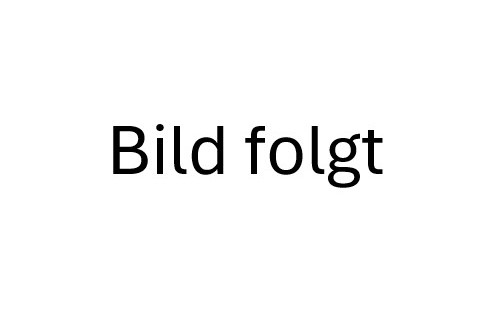

TEAMS
Herren 1
Wir sind die erste Herrenmannschaft der KTB Sharks und spielen in der 2. Regionalliga Nord. Uns ist vor allen Dingen der Teamzusammenhalt und der Spaß am besten Sport der Welt wichtig. Wir sind ein Team, das im Kern seit mehreren Jahren zusammen spielt und immer wieder von ambitionierten Neuzugängen, erweitert wird. Neben dem Training fahren wir zu wöchentlichen Spielen in und um Schleswig- Holstein und wollen nach einer erfolgreichen Saison 23/24 daran anknüpfen.
Trainingszeiten:
| Tag | Uhrzeit | Halle |
|---|---|---|
| Montag | 19:30 - 21:30 Uhr | Johanna-Mestorf-Halle |
| Dienstag | 20 - 22 Uhr | Reventlou-halle |
| Donnertag | 20 - 22 Uhr | Reventlou-halle |
Herren 2
Die 2. Herren erfahren seit Mitte letzter Saison mit einem neuen Trainer in der Landesliga einen Motivationsschub. Mit teils erfahreneren Spielern, die auch schon in höheren Ligen gespielt haben aber auch jungen Spielern, die frischen Wind ins Team bringen, ist die Mannschaft gut aufgestellt, um in der Liga für Aufruhr zu sorgen. Mit drei Trainingszeiten, montags 18:00-20:00 in der Andreas-Gayk-Schule und mittwochs 18:30-20:00 sowie freitags 19:30-21:30 in der Reventlouschule, wird viel trainiert und auch in der Off-Season kräftig an technischen Grundlagen und Skills gearbeitet. Auch abseits des Spielfeldes werden Team-building-Events veranstaltet um den Teamgeist zu stärken und nach dem Spiel oder Training auch mal an die frische Luft zu kommen.
Trainingszeiten:
| Tag | Uhrzeit | Halle |
|---|---|---|
| Mittwoch | 18:30 - 20 Uhr | Reventlou-halle |
| Freitag | 19:30 - 21:30 Uhr | Reventlou-halle |
Herren 3
Wir, die Herren 3, sind stolz darauf, dass wir in dieser Saison den Aufstieg in die Bezirksliga geschafft haben und nun bereit sind, unsere Ambitionen in dieser neuen Liga zu verwirklichen. Unsere Mannschaft besteht aus erfahrenen, talentierten und ehrgeizigen Spielern, die sich darauf freuen, sich auf diesem höheren Level zu beweisen.
Unsere Trainingseinheiten finden zweimal pro Woche statt, am Dienstag um 19:45 Uhr und am Freitag um 20:30 Uhr.
Wir legen großen Wert auf Teamwork und gegenseitige Unterstützung. Jeder Spieler bringt seine individuellen Fähigkeiten und Stärken mit ein, um zum Erfolg des Teams beizutragen. Durch harte Arbeit und Engagement streben wir danach, als Einheit zu agieren und unser Bestes auf dem Spielfeld zu geben.
Wir sind bereit, jede Herausforderung anzunehmen und werden hart dafür arbeiten, unsere Ziele zu erreichen.
Neben den Ligaspielen sind wir auch so eine gesellige Truppe, die jeden, der sich wirklich einbringen möchte gerne mit aufnimmt.
Wenn du ein leidenschaftlicher Basketballspieler bist, der bereit ist, hart zu arbeiten und sein Bestes zu geben, dann lade wir dich ein, dich unserem Team anzuschließen und gemeinsam mit uns die Bezirksliga zu rocken!
Trainingszeiten:
| Tag | Uhrzeit | Halle |
|---|---|---|
| Dienstag | 19:45 - 21:30 Uhr | Hebbelhalle (alt) |
| Freitag | 20:30 - 22:00 Uhr | Gelehten-halle |
Damen 1
Wir sind die KTB-Kangaroos. Bereits seit einigen Jahren gehen wir in der 2. Regionalliga Nord an den Start. Wir trainieren zweimal die Woche und haben zusätzlich eine Individualtrainingseinheit. Neue ambitionierte Spielerinnen auf fortgeschrittenem Niveau sind bei uns immer herzlich willkommen.
Trainingszeiten:
| Tag | Uhrzeit | Halle |
|---|---|---|
| Montag | 18:30 - 20:15 Uhr | Reventlou-halle |
| Mittwoch | 20 - 22 Uhr | Reventlou-halle |
Damen 2
Wir sind die 2. Damen und spielen in der Verbandsliga Schleswig-Holstein. Wir sind ein recht junges Team, das aus vielen Schülerinnen und Studentinnen besteht, und nehmen gerne fortgeschrittene Spielerinnen jedes Alters (ab U18) auf!
Trainingszeiten:
| Tag | Uhrzeit | Halle |
|---|---|---|
| Montag | 20:15 - 22 Uhr | Reventlou-halle |
| Donners-tag | 18:30 - 20:30 Uhr | Hebbelhale (alt) |
Damen 3
Wir sind die 3. Damen des KTB. Seit Oktober 2023 finden immer mehr neue Spielerinnen den Weg zum Basketballplatz und freuen sich, die Grundlagen des Spiels und die Techniken zu erlernen. Da wir bald auch am Spielbetrieb teilnehmen wollen, freuen wir uns sehr über neue Spielerinnen, die zum Training dazustoßen. Bei uns sind insbesondere Anfängerinnen willkommen, aber auch Spielerinnen, die schon ein wenig Basketballerfahrung haben.
Trainingszeiten:
| Tag | Uhrzeit | Halle |
|---|---|---|
| Montag | 20:15 - 22 Uhr | Reventlou-halle |
| Donners-tag | 20:30 - 22 Uhr | Hebbelhale (alt) |
U18 männlich (Jahrgänge 2007/08)
Moin,
wir sind die U18m des KTB. Nach einer schwierigen Saison in der
Oberliga mit Saisonstart ohne Trainer konnten wir uns Spiel für Spiel
verbessern und freuen uns auf die kommende Saison. Wir freuen uns außerdem
auch über Zuwachs, egal ob Du schon Erfahrung im Basketball gesammelt hast.
Hauptsache Du bist ehrgeizig und hast Spaß am Basketball!
Trainingszeiten:
| Tag | Uhrzeit | Halle |
|---|---|---|
| Dienstag | 18 - 20 Uhr | Reventlou- halle |
| Mittwoch | 18 - 20 Uhr | Halle am Westring |
| Freitag | 20 - 22:30 Uhr | Halle am Westring |
U16 männlich (Jahrgänge 2009/10)
Moin zusammen,
wir sind die U16m vom Kieler TB. Trainiert wird das Team hauptsächlich von Lu und Martin. Lu ist Haupttrainerin und spielt selbst in der Damenmannschaft. Martin ist unser Athletik- und Co-Trainer in der Mannschaft.
Wenn du Anfänger bist und noch nicht so viel mit Basketball in Berührung gekommen bist, dann komm gerne zu unserem U16.2-Training, welches Freitags stattfindet und genau dafür da ist die Basics zu lernen und sicher am Ball zu werden.
Falls du schon öfter gespielt hast, dir die Regeln von Basketball vertraut sind und du sicher mit dem Basketball bist, dann komm gerne zum U16.1-Training. Wir setzen hier das Wissen der grundsätzlichen Regeln voraus und möchten darauf aufbauen, da wir mit dieser Mannschaft auch im Ligabetrieb antreten.
Wir freuen uns auf neue Gesichter und sehen uns ja vielleicht schon bald in der Halle!
Trainingszeiten:
| Tag | Uhrzeit | Halle |
|---|---|---|
| Dienstag | 16 - 18 Uhr | Reventlou-halle |
| Freitag (15.3.-14.10.) |
17 - 19:30 Uhr | Reventlou-halle |
| Freitag (15.10.-14-3.) |
18:30 - 20:30 Uhr | Gelehrten-halle |
U14 männlich (Jahrgänge 2011/12)
Unsere Mannschaft besteht aus leidenschaftlichen jungen Spielern im Alter von 12 bis 14 Jahren, die Basketball lieben und ständig danach streben, sich zu verbessern. Unser Training findet zweimal wöchentlich statt, jeweils am Montag und Donnerstag um 17:00 Uhr in der alten Sporthalle der Hebbelschule. Hier haben die Spieler die Möglichkeit, ihre Fähigkeiten unter der Anleitung durch den Trainer Thomas zu verfeinern und neue Techniken zu erlernen.
Wir legen großen Wert auf Teamgeist und Zusammenarbeit. Jeder Spieler ist ein wichtiger Teil unseres Teams und wir unterstützen uns gegenseitig, um gemeinsam Erfolge zu erzielen. Bei uns steht der Spaß am Sport im Vordergrund, denn wir glauben daran, dass die Freude am Spiel der Schlüssel zu großartigen Leistungen ist.
Während der Saison haben unsere Spieler die Möglichkeit, an verschiedenen Turnieren teilzunehmen. Diese Turniere bieten nicht nur die Chance, ihr Können gegen andere Teams unter Beweis zu stellen, sondern auch wertvolle Erfahrungen zu sammeln und neue Freundschaften zu knüpfen.
Unsere "Junior Sharks" sind hungrig nach Erfolg und streben stets danach, sich zu verbessern. Mit harter Arbeit, Hingabe und Entschlossenheit arbeiten wir gemeinsam daran, unsere Ziele zu erreichen und unser volles Potenzial auszuschöpfen.
Wenn du ein begeisterter junger Basketballspieler bist, der Spaß am Spiel hat und bereit ist, sich zu verbessern, dann bist du bei den "Junior Sharks" genau richtig! Komm vorbei und werde Teil unseres Teams – gemeinsam geben wir unser Bestes!
Trainingszeiten:
| Tag | Uhrzeit | Halle |
|---|---|---|
| Montag | 17 - 18:30 Uhr | Hebbelhalle (alt) |
| Donners-tag | 17 - 18:30 Uhr | Hebbelhalle (alt) |
U12 Mixed (Jahrgänge 2013/14)
Moin,
wir sind das U12-Team des Kieler TB. Nach einem herausfordernden Jahr ohne Spielbetrieb freuen wir uns schon sehr auf die kommende Saison. Wir sind bereit, unsere Fähigkeiten im Training zu verbessern und im Spiel zu zeigen, was in uns steckt. Natürlich steht bei uns in dieser Altersklasse der Spaß an erster Stelle. Deshalb heißen wir auch alle neuen Spieler im Alter von 9 bis 11 Jahren herzlich willkommen. Egal, ob Du bereits Basketballerfahrung hast oder gerade erst anfängst, schau doch einfach mal zu einer unserer Trainingszeiten vorbei!
Trainingszeiten:
| Tag | Uhrzeit | Halle |
|---|---|---|
| Mittwoch | 16 - 17:30 Uhr | Hebbelhalle (alt) |
| Freitag | 16 - 17:30 Uhr | Hebbelhalle (alt) |
U10 Mixed (Jahrgänge 2015/16)
Wir sind das u10 Mixed Team des Kieler TB. Egal, ob du schon Berührungspunkte mit Basketball hattest, oder noch nicht, bist du bei uns herzlich willkommen. Jeden Donnerstag versuchen wir den Kindern den Sport spielerisch näher zubringen. An erster Stelle steht bei uns natürlich immer der Spaß! Wenn du unter 10 Jahre alt bist und Lust auf Basketball hast, dann schau doch gerne mal bei uns in der Halle vorbei. Wir freuen uns immer über jedes neue Gesicht!
Trainingszeiten:
| Tag | Uhrzeit | Halle |
|---|---|---|
| Donnerstag | 16 - 17:30 Uhr | Gelehrten-halle |
U18 weiblich (Jahrgänge 2007/08)
Wir sind die weibliche u18 des KTB und sind ein gemischtes Team aus erfahrenen Basketballspielerinnen aber auch Anfängerinnen. Kommende Saison starten wir, wie auch die letzten Jahre, in der Oberliga Schleswig-Holstein. Aktuell trainieren wir zweimal die Woche und sind nach dem altersbedingten Ausscheiden einiger Spielerinnen dringend auf der Suche nach neuen Spielerinnen, egal ob Anfängerinnen oder Fortgeschrittene, bei uns sind alle willkommen!
Trainingszeiten:
| Tag | Uhrzeit | Halle |
|---|---|---|
| Montag | 17 - 18:30 Uhr | Reventlou-halle |
| Mittwoch | 17 - 18:30 Uhr | Hebbelhalle (neu) |
U16 weiblich (Jahrgänge 2009/10)
Bericht folgt
Trainingszeiten:
| Tag | Uhrzeit | Halle |
|---|---|---|
| Mittwoch | 16:45 - 18:15 Uhr | Ernst-Barlach-halle |
| Freitag | 17:30 - 19:00 Uhr | Hebbelhalle (alt) |
U14 weiblich (Jahrgänge 2011/12)
Bericht folgt
Trainingszeiten:
| Tag | Uhrzeit | Halle |
|---|---|---|
| Dienstag | 16:30 - 18:30 Uhr | Hebbelhalle (neu) |
| Freitag | 16:15 - 17:45 Uhr | RBZ (Schützen-park) Halle |